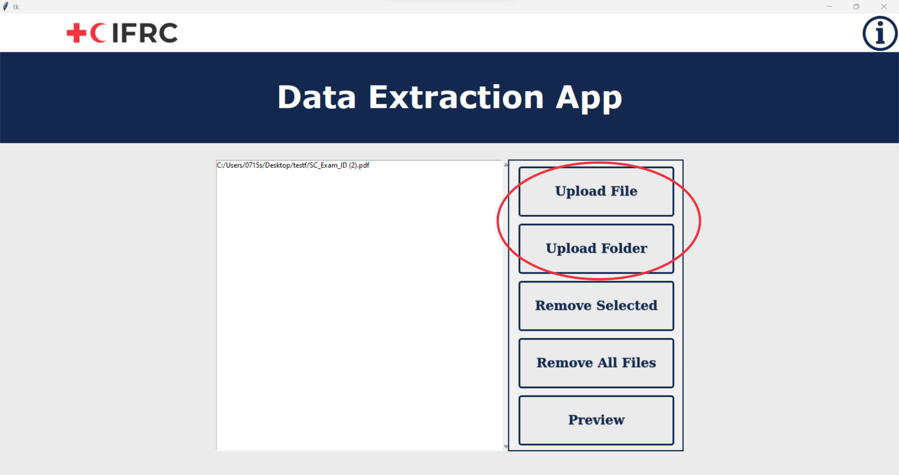
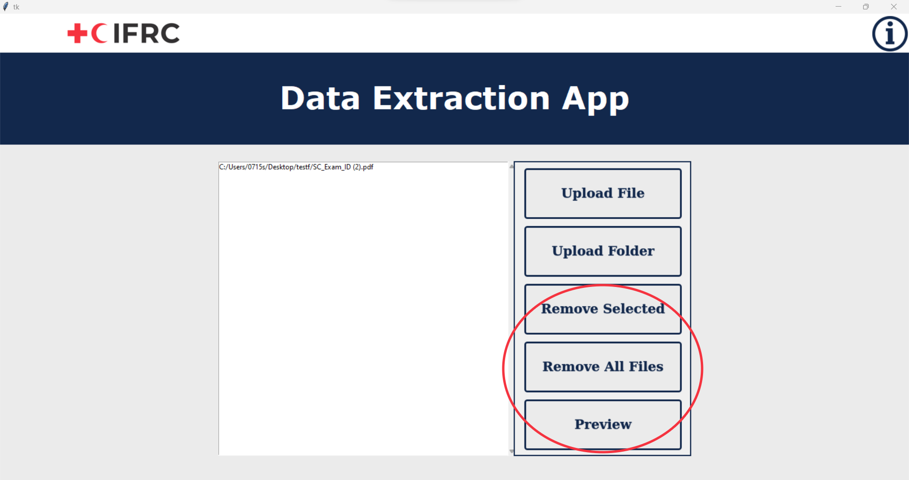
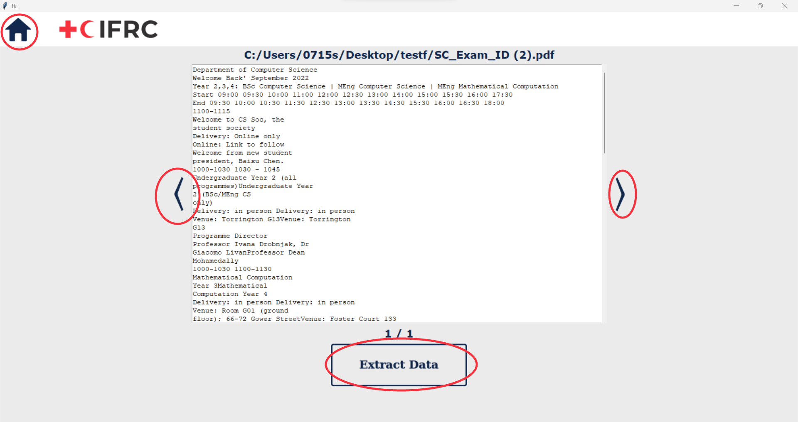
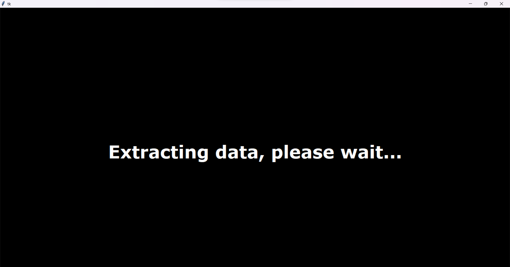
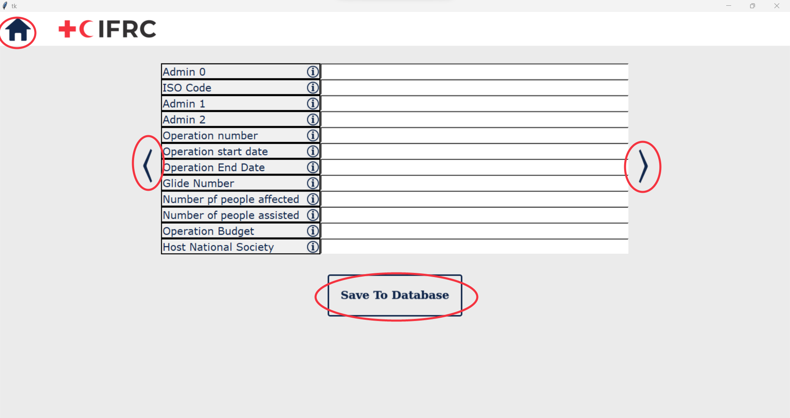

This video will help you get started.
First, upload the files by clicking on the “Upload File” button to upload one file, or “Upload Folder” button to upload a folder. You can also drag and drop files/folders into the drop box on the left for the same purpose. Info button will inform you the steps of how to use the app.
If there are any files you want to remove, click on the file/files you wish to remove, and click “Remove Selected” to remove the chosen files. Or you can click “Remove All Files” to clear the drop box. Once you are ready to proceed, click “Preview”.
You will be able to check the text of the files you uploaded, click left and right arrow to browse all the files. Click on the home icon to return to home page. Click “Extract Data” once you are ready. Beware that uploading non-final report file may lead to app failure.
The extraction process will take some time, please be patient. Once the data is extracted, it will be presented on the table, which you will be able to edit. Click left and right arrow to browse through all the tables. Once you have checked all the data are correct, proceed by clicking “Save to Database”. The data will then be saved and you will be notified that the process is successful.
 1) Uploading non-final report file will lead to failure of app. Please only upload final report files.
2) The model is not perfect, and it will give incorrect outcomes. Please check the data first before saving to the database.